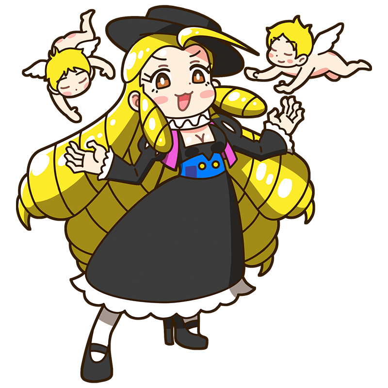

おーっほっほっほっ！
このルーベンス様の右に
出るものはいないのよっ！
ルーベンス
自信家ミューズを導くのは
空舞う天使か、それとも神か
バロック時代を代表する大人気ミューズ。信じられないくらいの自信家で高飛車な性格だがそれだけの実力と華やかさを兼ね備えていて、気づけば彼女のまわりには多くの人が集まってくる。パトロンも、弟子も、それから天使さえも……。
様式
バロック出身国
ヴェストファーレン(現ドイツ)
代表作
- "キリスト昇架/降架"
- "マリー・ド・メディシスの生涯"
- "パリスの審判" など
ルーベンスといえばこの一枚！
キリスト昇架/降架
十字架にかけられ、そして降ろされるキリストを描いた連作絵画。「『フランダースの犬』でネロが最後に見たやつ」として、おそらく日本で最も有名なルーベンスの作品であろう。凄惨ながら逞しいキリストの肉体の描写には『ラオコーン像』をはじめとした古代ローマの美術作品の研究成果がふんだんに盛り込まれており、強烈な迫力を与えている。
制作年
1610-1611年(昇架)、
1611-1614年(降架)
技法・材質
油彩、板
寸法
421 cm x 311 cm(昇架)、
460 cm x 340 cm(降架)
所蔵
聖母大聖堂
(ベルギー)
作品画像出典: https://commons.wikimedia.org/wiki/File:Peter_Paul_Rubens_-_De_kruisoprichting.JPG、https://commons.wikimedia.org/wiki/File:Peter_Paul_Rubens_-_The_Descent_from_the_Cross_%28Antwerp_Cathedral%29.,_c._1613.jpg
ルーベンスってどんな芸術家？
ピーテル・パウル・ルーベンス
バロック美術を代表する巨匠であり、西洋美術史上でも屈指の成功を収めた画家のひとり。イタリアの古典彫刻やルネサンス絵画の影響を受けたダイナミックかつ鮮やかな画面は国内外問わず高い人気を誇り、有名になるにつれて膨れ上がった大量の注文を、多くの助手たちとともにこなしていた。その一方で外交官としても活躍し、ヨーロッパ各地を飛び回りながら和平交渉にも携わるなど、幅広い活躍を見せた超人である。
フルネーム
Sir Peter Paul Rubens
誕生
1577年6月28日
死没
1640年5月30日(62歳没)